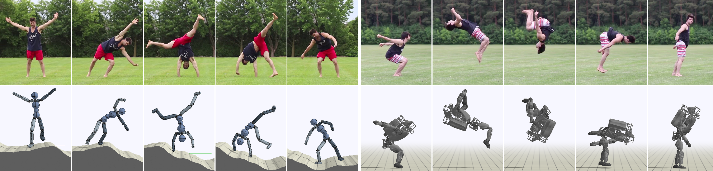

Transactions on Graphics (Proc. ACM SIGGRAPH Asia 2018)
Xue Bin PengAngjoo KanazawaJitendra MalikPieter AbbeelSergey Levine
University of California, Berkeley

Abstract
Data-driven character animation based on motion capture can produce
highly naturalistic behaviors and, when combined with physics simulation,
can provide for natural procedural responses to physical perturbations,
environmental changes, and morphological discrepancies. Motion capture
remains the most popular source of motion data, but collecting mocap data
typically requires heavily instrumented environments and actors. In this
paper, we propose a method that enables physically simulated characters
to learn skills from videos (SFV). Our approach, based on deep pose estimation
and deep reinforcement learning, allows data-driven animation to
leverage the abundance of publicly available video clips from the web, such
as those from YouTube. This has the potential to enable fast and easy design
of character controllers simply by querying for video recordings of the
desired behavior. The resulting controllers are robust to perturbations, can
be adapted to new settings, can perform basic object interactions, and can
be retargeted to new morphologies via reinforcement learning. We further
demonstrate that our method can predict potential human motions from
still images, by forward simulation of learned controllers initialized from
the observed pose. Our framework is able to learn a broad range of dynamic
skills, including locomotion, acrobatics, and martial arts.